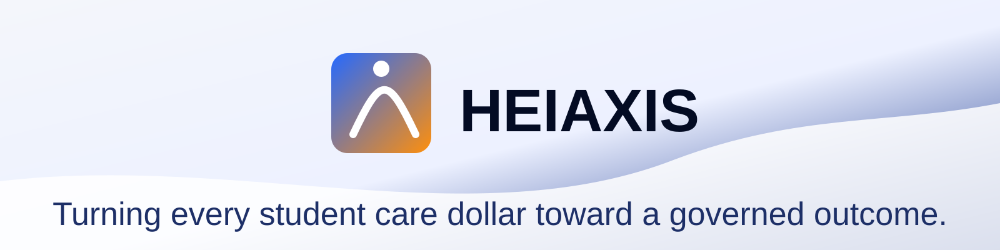

The Missing Accountability Layer for Campus Care
Autonomous control over execution, accountability, and institutional outcomes
Confidential. Prepared solely for investor briefing purposes. Not for distribution or forwarding.
Market Validation: Demand is Real
Institutional conversion is next.
Research 1,100+ students, 41 institutions, 137 staff and leaders (VPs, leadership, counseling services)
Alpha — Fall 2025 240 students, 15 cohorts, 84% completion, 88% weekly participation, 79% asked to continue
Pipeline 6 active discussions for Fall 2026, 2 Design Partner signatures within 45 days
Demand is validated. We are converting institutions.
The Care Blind Spot: Institutional Blindness
Counseling Centers Reach Counseling centers directly serve ~11.3% of students on average. Need spans mental health, housing, financial stress, and academic risk.
Funding vs. Execution Institutions fund services, referrals, and vendors without execution visibility. They cannot reliably show what happened after handoff, referral, or delay.
Operational Source of Truth Budget flows into a system with no operational source of truth.
The problem is not a lack of care. It is institutional blindness.
Why Now?
Rising Costs and Decreasing Visibility More vendors, more AI, more operational sprawl Rising pressure for outcomes, efficiency, and accountability 19.5M students $55B annual care and support spend ~$22B tied to fragmented workflows
Campuses are paying more for less visibility.
More spending without control creates more risk.
HEIAXIS: The Operating System for Care Accountability
Without HEIAXIS - disconnected services - manual coordination - reactive follow-up - no control layer
With HEIAXIS - governed journeys - owned next steps - autonomous execution - auditable outcomes
HEIAXIS is the Operating System for Care Accountability.
We are the Operating System for Care Accountability.
Five Layers for Execution Accountability
One Single Source of Truth for Execution
1. Student Intake & Journey Agent Every student gets the next step. No one falls through. Faster triage, fewer staff hours, better prioritization, and the operational data layer for the full system.
2. Execution Orchestration Layer Someone owns every handoff. Always. Fewer dropped handoffs, less manual chasing, faster execution, and stronger continuity.
3. Audit Journey Agent When something breaks, you know before it costs you. Traceability, accountability, audit ready visibility, and proof of execution.
4. Budget & ROI Agent See exactly where the money is not working. ROI visibility, better allocation decisions, measurable performance improvement, and budget control.
5. Vendor Governance Layer Stop paying for vendors that do not perform. Lower vendor waste, better routing decisions, and a path to consolidation.
HEIAXIS GOVERNS EXECUTION, AUDITS OUTCOMES, AND IMPROVES THE ECONOMICS BEHIND CAMPUS CARE.
Five layers ensures accountability across the entire student journey.
Why We Win: Action Over Data Graveyards
HEIAXIS is an engine for action, not just a graveyard for data.
Legacy Systems Record, workflow tools assign, copilots suggest, point tools fragment.
HEIAXIS Determines what happens next (closed-loop governance), governs action across teams and vendors, enforces follow through, and provides vendor-neutral orchestration across silos.
Insight without action is expensive documentation.
Closing the Execution Gap: From Liability to Control
High-risk mental health referral
Before Concern flagged Counseling delay Referral sent No follow-through No vendor visibility Result: Blind. Liable. Headline risk.
After Intake triggered SLA tracked Referral monitored Stalled journey flagged Intervention triggered Result: Controlled. Auditable. Retaining revenue.
Loss happens between referral and follow-through.
Stakeholder Value: Gaining Control Over Outcomes
Control where outcomes move
Leadership Know when execution breaks before the institution pays for it.
Budget owners Know which vendors and workflows are not delivering return.
Student Affairs Prove performance with data, not anecdotes.
Less activity. More control.
Economic Impact
Affordability and Avoiding Losses
~$160K Net Upside Vendor + workflow savings
~$310K Efficiency Based on Fall 2025 Alpha persistence signals.
~$1.45M+ Conservative Estimate Calculated on a 0.5% persistence lift (~50 students) at ~$30K annual tuition / grant value.
$1.5M+ Retention
The question is not whether you can afford this. It is how much you are losing without it.
Go-to-Market Strategy: Entering Through a Known Problem
A Focused Approach to Student Success
Buyer VP Student Success, VP Student Affairs, Dean of Students
Economic Authority CFO, Provost
Motion One workflow, one win, then broader expansion
Go-to-Market Wedge We enter through the problem every VP already knows they have and cannot fix. High-leakage handoffs that drive tuition loss
We land in retention operations and expand into institutional infrastructure.
Plug-and-play deployment. No rip-and-replace.
Scale & Deployment
25 institutions ~$10.5M ARR by 2027 $2.4M raise 18 months runway
Technical edge API-first integration with SIS / LMS / CRM passive data ingestion from existing workflows sits above the legacy stack
Repeatable rollout, not custom implementation.
From Blindness to Controlled Execution
The campuses that move first will define the standard. The rest will explain why they didn’t.
Every journey tracked Every step owned Every vendor measured Every dollar accountable
The campuses that move first will define the standard. The rest will explain why they didn’t.